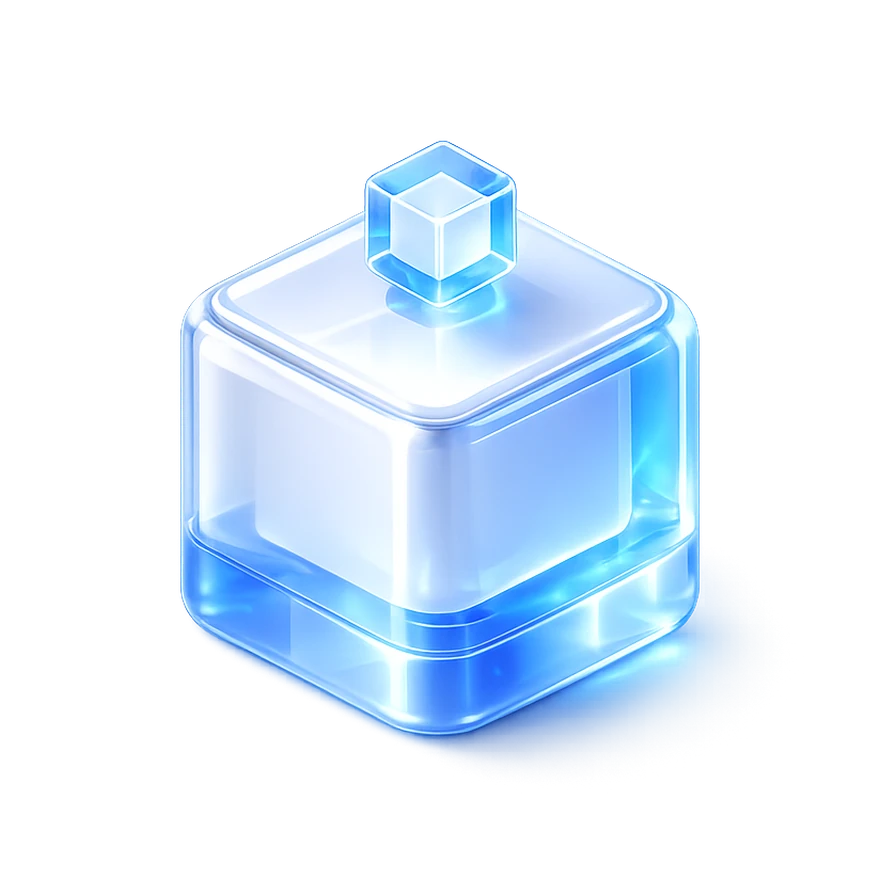
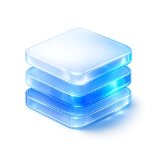
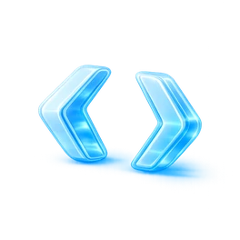

End-to-End 오너십
기획 → 디자인 → 구현 → 배포 → 운영. 아이디어가 사용자에게 닿을 때까지의 모든 단계를 직접 맡습니다.

김준수
프론트엔드 · AI 엔지니어
버튼을 누르거나 ESC로 건너뛰기
2인 개발 체제에서 커밋의 38%(355/941)를 맡았습니다. 화면을 만들고 끝내는 대신 배포 절차를 문서로 남겨, 다음 사람이 이어받게 했습니다.
실제 사용 환경을 직접 보고 문제를 정의합니다. 농가를 방문해 주문 흐름을 관찰한 뒤 화면을 설계했습니다.
GA4와 Clarity로 사용자 행동을 읽고, 바꾼 것이 실제로 나아졌는지 지표로 확인합니다.
2인, 3인 팀에서 일했습니다. 한 화면을 만드는 일보다, 그 화면이 실제로 쓰이게 만드는 일에 시간을 더 썼습니다.
기획 → 디자인 → 구현 → 배포 → 운영. 아이디어가 사용자에게 닿을 때까지의 모든 단계를 직접 맡습니다.

프론트엔드부터 FastAPI 백엔드, Docker와 CI/CD 인프라까지 이어서 다룹니다. 막히는 지점을 남에게 넘기지 않습니다.
사용 현장을 직접 관찰하고 행동 데이터를 읽어, 요구사항 뒤에 있는 진짜 문제를 정의합니다.
LLM과 SAM2를 실제 화면 흐름에 통합합니다. My Feed에서는 AI 분류 오류율을 10%에서 3%로 낮췄습니다.
실제로 운영되는 제품들입니다. 사내 서비스를 뺀 나머지는 데모 링크가 살아 있습니다.
전국 130여 농가·1,200여 사료빈을 모니터링하는 축산 IoT SaaS. 웹 개발 2인 체제에서 커밋 38%를 맡아 농장 모니터링 화면과 관리자, 웹 알림 시스템을 주도했습니다. 모니터링 상세 API의 N+1을 걷어내 3개월 조회 기준 DB 왕복을 2,400회에서 1회로 줄였고, 관리자 이미지 목록은 실측 20장 172초에서 수 초로 내렸습니다. SAM2 도입을 직접 제안해 사료빈 이미지 분류 오류율은 10%에서 3%가 됐습니다.
30개 이상의 컴포넌트를 npm에 배포한 오픈소스 디자인 시스템. 4인 팀에서 UI 컴포넌트 설계·개발을 맡았고, Storybook 문서와 Rollup 빌드 파이프라인을 함께 구성했습니다. 웅진씽크빅 × Udemy 부트캠프 2등.
퀴즈 저작 · 검수 · 관리 SaaS. 모듈형 에디터와 검수 워크플로우를 설계했고, GitHub Actions와 EC2 self-hosted runner로 배포를 자동화했습니다. 멀티스테이지 Dockerfile은 인스턴스 디스크가 모자라 빌드가 계속 죽어서 PM2 기반으로 바꿔 끝냈습니다. 자료 삭제 API에서 남의 자료도 지워지는 문제를 발견해 등록자 검증과 사용자별 API 분리를 제안하고 문서로 남겼습니다.
한국인 영양섭취기준(KDRIs)으로 개인별 목표 섭취량을 계산하고, EfficientNet으로 음식 사진을 분류하는 식단관리 PWA. 3인 팀에서 기획·프론트엔드·발표를 맡았습니다. 전날 식단은 매일 00시 배치로 ChatGPT API가 피드백합니다. 여러 음식이 한 접시에 담기면 분류가 흔들리고 질량 추정은 구현하지 못했습니다. 한국공학대전 우수상.
검색 노출이 어려운 실제 기업의 Vue 서비스를 Next.js로 옮겨 서버 렌더링과 메타데이터 구조를 다시 설계했습니다. 팀 리더로 일정과 UI 개발을 총괄했고, 스나이퍼팩토리 부트캠프 우수상을 받았습니다.
대부분의 실패는 무엇을 풀지 정하지 않은 채 손부터 대는 데서 나옵니다. 네 단계를 돌리고 지표를 확인한 뒤, 다시 첫 단계로 돌아갑니다.
무엇을 풀지부터 좁힙니다. 사용 현장과 데이터를 함께 봅니다.
화면 흐름과 데이터 구조, 권한 범위를 같은 자리에서 그립니다. 여기서 빠뜨린 것은 구현에서 두 배로 돌아옵니다.

프론트엔드와 API, 배포 파이프라인까지 이어서 만듭니다.
실제 사용 지표를 읽고 다음에 고칠 것을 정합니다. 대개 여기서 1번이 다시 시작됩니다.
2025.07 — 현재
주임연구원 (정규직) · SaaS 기획 · 프론트엔드 · AI 통합
2025.03 — 2025.06
Intern · 프론트엔드 · 배포 자동화
2021.06 — 2022.12
정보통신 병과 — 정보분석 부대에서 네트워크 정비를 맡았습니다.
2020.03 — 2026.02
컴퓨터공학부 소프트웨어전공 · 학점 3.45 / 4.5 (전공 3.54)
이력 · 프로젝트에 대해 답해드립니다
AI가 이력서 데이터를 바탕으로 답합니다. 대화는 저장되지 않으며, 정확한 확인은 메일로 부탁드립니다.